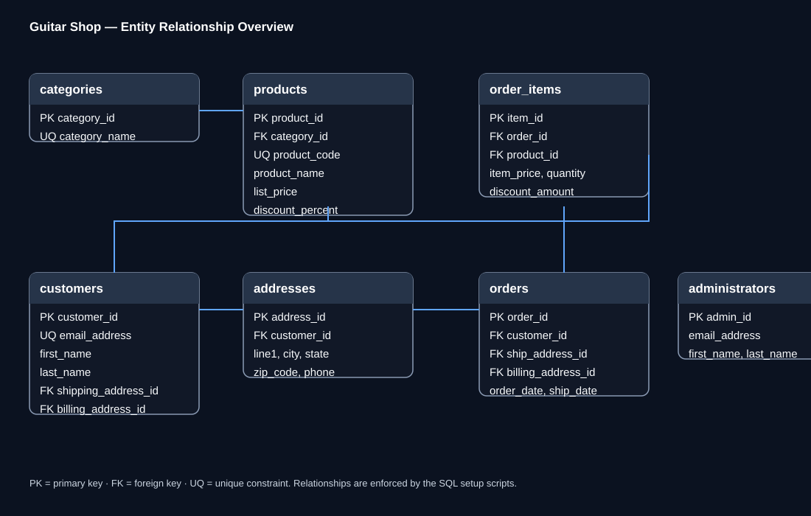

Product catalogue
Organises products by category, with product codes, descriptions, prices and discount percentages.
MYSQL · RELATIONAL DATABASE DESIGN
A relational database for a guitar shop, modelling its product catalogue, customers, addresses, orders and order items — with practical SQL for reporting and day-to-day data retrieval.
01 / PROJECT OVERVIEW
The database models the core information a small online guitar retailer needs to organise its catalogue and order workflow.
Organises products by category, with product codes, descriptions, prices and discount percentages.
Stores customer contact details and separates customer records from their saved addresses.
Connects customers, orders, addresses and individual order line items through relational keys.
Uses joins and aggregate functions to answer questions about products, order activity and sales values.
02 / DATABASE DESIGN
The schema uses primary keys to identify records and foreign keys to represent relationships between the main business entities.

03 / SQL SHOWCASE
Explore representative queries included in the repository. These examples are provided as source code; this static page does not connect to a live MySQL server.
SELECT p.product_name, c.category_name, p.list_price
FROM products AS p
JOIN categories AS c
ON c.category_id = p.category_id
ORDER BY c.category_name, p.product_name;Joins products to their category so each catalogue item is displayed with its classification.
04 / GET STARTED
The GitHub Pages site is a documentation and demonstration layer. To execute queries, clone the repository and run the SQL scripts against MySQL.
Use MySQL Server 8.0 or later. MySQL Workbench is optional but recommended for exploring the schema.
git clone https://github.com/Lee1572/Database-Management-System-MySQL.git cd Database-Management-System-MySQL
mysql -u root -p < database/schema.sql mysql -u root -p < database/sample-data.sql mysql -u root -p < database/constraints-and-indexes.sql
The schema script drops and recreates my_guitar_shop. Do not run it against a database containing data you need.
Run the files in database/queries/ and the stored procedures in database/procedures/ after setup.
BUILT TO BE EXPLORED
Review the SQL, inspect the relationships, and see how the database brings the shop's information together.
Explore the code on GitHub ↗